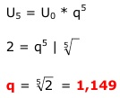

Aufgabe 241 a) Ein Betrieb hat seinen Umsatz in 5 Jahren auf 4 Millionen € verdoppelt. Wie groß ist der Wachstumsfaktor q? b) Nach wie viel Jahren hat sich der Umsatz des Betriebes von 60 Mio bei einem jährlichen prozentualen Wachstum von 9,5% auf 200 Mio gesteigert? a)  b) Wachstumsfaktor = 1,095 Unn = U0 * qn 200 Mio = 60 Mio * 1,095n | :60 200 ----- = 1,095n 60 Logarithmieren: 200 lg ------- = lg 1,095n 60 lg 200 – lg 60 = n * lg 1,095 | :lg 1,095 lg 200 – lg 60 2,301 – 1,7782 n = ---------------- = ----------------- = 13,3 Jahre lg 1,095 0,0394